Getting Started
in this article we are going to be considering various classes of aquatic organisms with their species and we are briefly explain their characteristics, adaptations.Davon aquarium is going to give you detailed information you need to know about aquarium fish species as well as their habitat and mode of living.Let's start briefly with their classification
| FRESH WATER | SALT WATER |
|---|---|
| Fish | Whales |
| Amphibians | Crustaceans |
| Reptiles | Fish |
| Plants | Plants |
FRESH WATER
is defined as having a low salt concentration- usually less than 1% . Plants and animals in freshwater regions are adjusted to the low salt content and would not be able to survive in areas of high salt concentration, for example: the ocean.Freshwater ecosystems are a subset of Earth's aquatic ecosystems. They habitats include lakes and ponds, rivers, streams, springs, bogs, and wetlands.They can be contrasted with marine ecosystems, which have a larger salt content. Freshwater habitats can be classified by different factors, including temperature, light penetration, nutrients, and vegetation.
Amphibians
Amphibians are ectothermic, tetrapod vertebrates of the class Amphibia. Modern amphibians are all Lissamphibia. They inhabit a wide variety of habitats, with most species living within terrestrial, fossorial, arboreal or freshwater aquatic ecosystems. Thus amphibians typically start out as larvae living in water, but some species have developed behavioural adaptations to bypass this. The young generally undergo metamorphosis from larva with gills to an adult air-breathing form with lungs. Amphibians use their skin as a secondary respiratory surface and some small terrestrial salamanders and frogs lack lungs and rely entirely on their skin. They are superficially similar to lizards but, along with mammals and birds, reptiles are amniotes and do not require water bodies in which to breed. With their complex reproductive needs and permeable skins, amphibians are often ecological indicators; in recent decades there has been a dramatic decline in amphibian populations for many species around the globe.
Characteristics
Amphibians are cold-blooded vertebrates that do not maintain their body temperature through internal physiological processes. Their metabolic rate is low and as a result, their food and energy requirements are limited. In the adult state, they have tear ducts and movable eyelids, and most species have ears that can detect airborne or ground vibrations. They have muscular tongues, which in many species can be protruded. Modern amphibians have fully ossified vertebrae with articular processes. Their ribs are usually short and may be fused to the vertebrae. Their skulls are mostly broad and short, and are often incompletely ossified. Their skin contains little keratin and lacks scales, apart from a few fish-like scales in certain caecilians. The skin contains many mucous glands and in some species, poison glands. The hearts of amphibians have three chambers, two atria and one ventricle. They have a urinary bladder and nitrogenous waste products are excreted primarily as urea. Most amphibians lay their eggs in water and have aquatic larvae that undergo metamorphosis to become terrestrial adults. Amphibians breathe by means of a pump action in which air is first drawn into the buccopharyngeal region through the nostrils. These are then closed and the air is forced into the lungs by contraction of the throat.They supplement this with gas exchange through the skin.
Examples of Amphibians that can be found in our auaqrium
PLANTS
are used to give the freshwater aquarium a natural appearance, oxygenate the water, absorb ammonia, and provide habitat for fish, especially fry (babies) and for invertebrates. Some aquarium fish and invertebrates also eat live plants. Hobbyists use aquatic plants for aquascaping, of several aesthetic styles.Most of these plant species are found either partially or fully submerged in their natural habitat. Although there are a handful of obligate aquatic plants that must be grown entirely underwater, most can grow fully emersed if the soil is moist. Though some are just living at the water margins, still, they can live in the completely submerged habitat.
Examples of plants that can be found in our auaqrium


 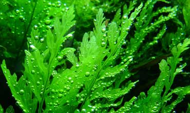
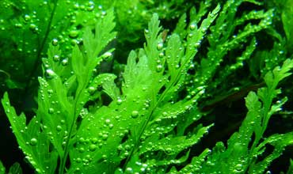
SALTWATER WATER
overs about 3/4 of the Earth's surface and include oceans, coral reefs, and estuaries. The Marine algae supply much of the world's oxygen supply and take in a huge amount of atmospheric carbon dioxide. The evaporation of the seawater provides rainwater for the land. Saltwater fish are very popular among deep sea fishermen and aquariums all over the country. Saltwater fish are very commonly kept in aquariums for entertainment. Many saltwater fish are also caught to be eaten.Fish that live in the ocean can be carnivores, herbivores, or omnivores. Herbivores in the ocean eat things such as algae and flowering seagrasses. Many herbivores' diets consist of primarily algae. Most saltwater fish will eat both macroalgae and microalgae. Many fish eat red, green, brown, and blue algae, but some fish prefer certain types. Most saltwater fish that are carnivores will never eat algae under any circumstances. Carnivores' diets consist of shrimp, plankton, or tiny crustaceans.
Whales
Whales belong to the order cetacea, which includes whales, dolphins and porpoises. Whales are divided into two suborders: baleen and toothed whales. Baleen whales have a comb-like fringe, called a baleen, on the upper jaw, which is used to filter plankton, as well as small fish and crustaceans. They are the largest species of whale. Toothed whales have teeth and prey on fish, squid, other whales and marine mammals. They sense their surrounding environment through echolocation.Like all mammals, whales breathe air into lungs, are warm-blooded, feed their young milk and have some (although very little) hair. Their bodies resemble the streamlined form of a fish, while the forelimbs or flippers are paddle-shaped. The tail fins, or flukes, enable whales to propel themselves through the water. Most species of whale have a fin on their backs known as a dorsal fin.
Did You Know?
Whales are mammals, and as such, they have hair very little of it! Beneath the skin lies a layer of fat called blubber. It serves as an energy reservoir and also as insulation. Whales breathe through blowholes, located on the top of the head so the animal can remain submerged. Baleen whales have two blowholes,while toothed whales have one.Most whales are quite active in the water. They jump high, or breach, out of the water and land back in the water. They also thrust their tails out of the water and slap the water's surface, which is believed to be a warning of danger nearby. Whales also communicate with each other using lyrical sounds. These sounds are extremely loud depending on the species and can be heard for many miles. Because of their environment (and unlike many animals) and because they need to breathe air by coming to the water's surface, whales are conscious breathers, meaning they decide when to breathe. All mammals sleep, including whales, but they cannot afford to fall into an unconscious state for too long, since they need to be conscious to break the surface in order to breathe
 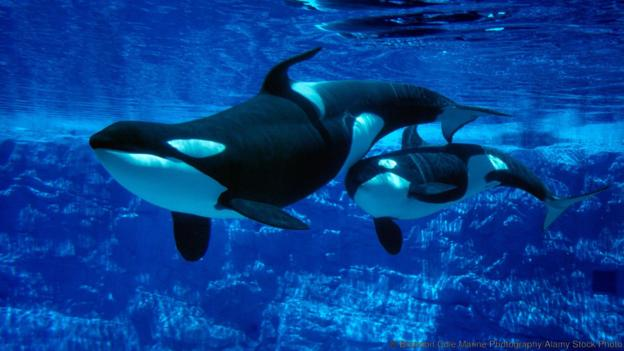
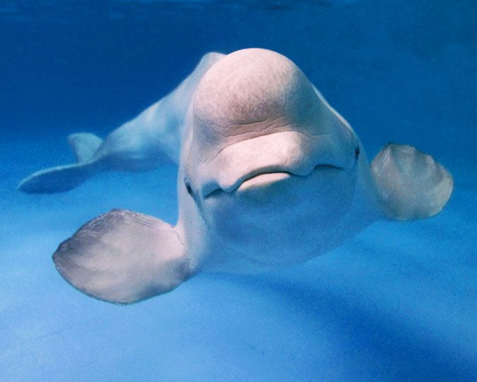
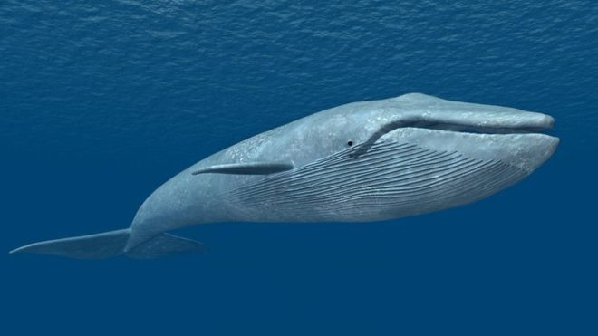
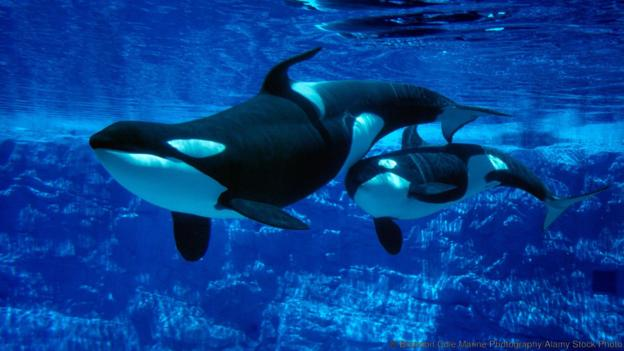
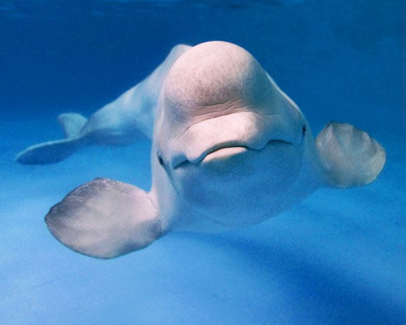
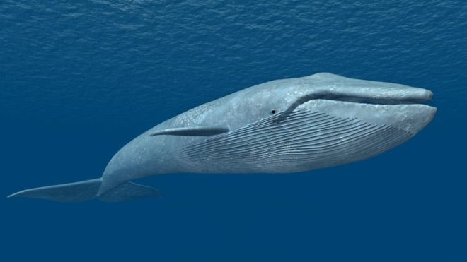
Crustaceans
Crustaceans form a large, diverse arthropod taxon which includes such familiar animals as crabs, lobsters, crayfish, shrimp, krill, woodlice, and barnacles.The crustacean group is usually treated as a subphylum, and because of recent molecular studies it is now well accepted that the crustacean group is paraphyletic, and comprises all animals in the Pancrustacea clade other than hexapods.Some crustaceans are more closely related to insects and other hexapods than they are to certain other crustaceans. Most crustaceans are free-living aquatic animals, but some are terrestrial (e.g. woodlice), some are parasitic (e.g. Rhizocephala, fish lice, tongue worms) and some are sessile (e.g. barnacles). The group has an extensive fossil record, reaching back to the Cambrian, and includes living fossils such as Triops cancriformis, which has existed apparently unchanged since the Triassic period. More than 10 million tons of crustaceans are produced by fishery or farming for human consumption, the majority of it being shrimp and prawns. Krill and copepods are not as widely fished, but may be the animals with the greatest biomass on the planet, and form a vital part of the food chain. The scientific study of crustaceans is known as carcinology (alternatively, malacostracology, crustaceology or crustalogy), and a scientist who works in carcinology is a carcinologist.
Structure
The body of a crustacean is composed of segments, which are grouped into three regions: the cephalon or head, the pereon or thorax,and the pleon or abdomen.The head and thorax may be fused together to form a cephalothorax, which may be covered by a single large carapace. The crustacean body is protected by the hard exoskeleton, which must be moulted for the animal to grow. The shell around each somite can be divided into a dorsal tergum, ventral sternum and a lateral pleuron. Various parts of the exoskeleton may be fused together.Each somite, or body segment can bear a pair of appendages: on the segments of the head, these include two pairs of antennae, the mandibles and maxillae; the thoracic segments bear legs, which may be specialised as pereiopods (walking legs) and maxillipeds (feeding legs). The abdomen bears pleopods,and ends in a telson, which bears the anus, and is often flanked by uropods to form a tail fan.The number and variety of appendages in different crustaceans may be partly responsible for the group's success.Crustacean appendages are typically biramous, meaning they are divided into two parts; this includes the second pair of antennae, but not the first, which is usually uniramous, the exception being in the Class Malacostraca where the antennules may be generally biramous or even triramous. It is unclear whether the biramous condition is a derived state which evolved in crustaceans, or whether the second branch of the limb has been lost in all other groups. Trilobites, for instance, also possessed biramous appendages.
Plants
Marine plants used to give the aquarium a natural appearance, oxygenate the water, and provide habitat for fish, especially fry (babies) and for invertebrates. Some aquarium fish and invertebrates also eat live plants. Hobby aquarists use aquatic plants for aquascaping.Marine algae are also included in this list for convenience
Examples of marine plants that can be found in our auaqrium
 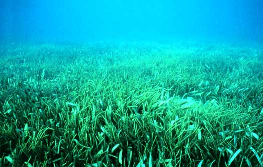
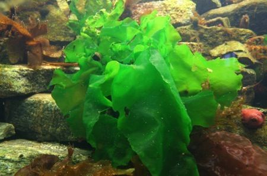
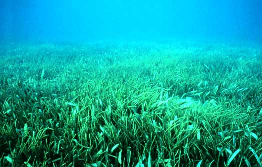
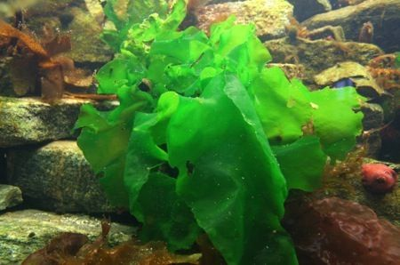